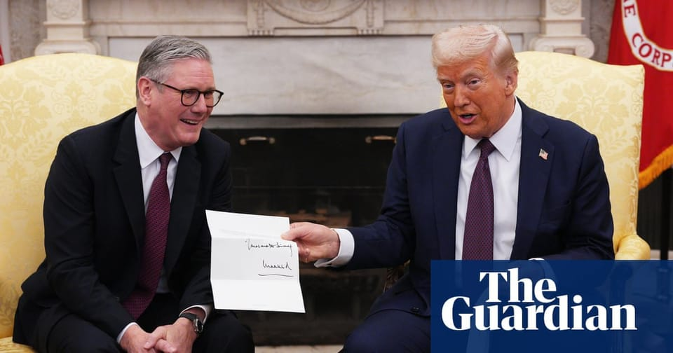

世界苦茶02月28日新闻 | 40条 | 特朗普将对加墨中再加关税

特朗普将对加墨中再加关税 | 英伟达财报大涨难救美国股市 | 美众议院意外通过预算法案 | 泰国滞留维吾尔人被遣返回国 | 中国派遣无人机进入日本防空识别区 | GPT4.5发布
三个水枪手
苦茶数据
美元兑人民币：7.29（昨日7.27，前日7.25）
美元兑日元：149.68（昨日149.17，前日149.46）
上证指数：3358（昨日3366，前日3367）
标普500指数：5861（昨日5956，前日5955）
比特币：80436（昨日84905，前日89105）
布伦特原油：73.66（昨日72.75，前日73.15）
中国新闻
• 中国国防部批评美台军事演习 ：对于台湾“汉光41号”演习传闻在美军的鼓动下动员规模翻倍，中国大陆国防部批评，美国妄图“以台制华”，最终必将祸及自身，并向台湾执政的民进党喊话：“早晚要来收了你们”。据中国大陆国防部网站消息，国防部新闻局局长、国防部新闻发言人吴谦星期四在记者会上回应此事时说，美方妄图“以台制华”，纵容民进党进行“台独”冒险挑衅，最终必将祸及自身。他还说，民进党幻想“倚美谋独”、“以武拒统”，这是对形势、民意和实力对比严重的误判，不自量力、极为危险。“正告民进党当局：螳臂当车只能自取灭亡，早晚要来收了你们。”
• 中国足协设诚信专员打击足球腐败 ：中国足球协会将选聘诚信专员，打击足球领域的腐败、假赌黑问题。据中国足球协会官网消息，中国足协星期四印发 《中国足球协会诚信专员管理办法（试行）》。管理办法旨在明确诚信专员的职责、选聘、管理等事项，确保诚信专员能够独立、公正地履行职责，有效预防和打击足球领域的腐败、假赌黑问题、操纵比赛等失信行为，促进足球运动健康发展。
• 中国国防部敦促美国先削减核武库 ：对于美国总统特朗普称将与中国和俄罗斯讨论削减核武器问题，中国国防部认为，在削减核武库和军费开支问题上，确实应该“美国优先”。据中国国防部网站消息，国防部新闻局局长、国防部新闻发言人吴谦星期四在记者会上说，作为拥有最大核武库的国家，美国应切实履行核裁军特殊、优先责任，进一步大幅、实质削减其核武库。“这一点，国际社会是有共识的。”他重申，中国奉行不首先使用核武器政策，坚持自卫防御核战略，始终将自身核力量维持在国家安全需要的最低水平，为维护国际和平与安全作出了积极贡献。
• 中美两军保持沟通，计划进一步交往 ：中国国防部发言人说，中美两军通过军事外交渠道保持着有效沟通，下阶段的两军交往已有初步计划和安排。据中国国防部网站消息，中国国防部新闻局局长、国防部新闻发言人吴谦星期四下午在例行记者会上答记者问时透露上述内容。针对中国军方是否担忧美军高层变动影响两军关系等问题，吴谦说，中国从不干涉他国内政。关于中美两军关系，双方通过军事外交渠道保持着有效沟通。下阶段两军交往，双方已经有了一些初步的计划和安排，将适时发布消息。
• 香港影视大亨黄百鸣涉内幕交易被控 ：香港证监会星期四对香港影视大亨黄百鸣展开检控，指他涉及内幕交易。黄百鸣获准以20万港元保释。综合《明报》、《香港经济日报》和网媒“香港01”等港媒报道，香港证监会星期四在东区裁判法院，对商人黄栢鸣展开刑事法律程序，指他就前称天马影视的传递娱乐的股份，进行内幕交易。证监会称，大约在2017年8月25日至2017年10月17日期间，黄栢鸣涉嫌怂使或促致另一名人士进行天马影视的股份交易，而他当时为天马影视的主席兼控股股东，掌握了他知道属有关天马影视的内幕消息的消息。
• 中国无人机GJ-2进入日本防空识别区 ：日本防卫省称，发现一架中国军方的无人机在冲绳周边的防空识别区飞行。据日本共同社报道，日本防卫省统合幕僚监部星期三发布消息称，首次发现中国军队一架GJ-2侦察攻击型无人机当天在冲绳周边的日本防空识别区飞行。防卫省称，GJ-2从中国大陆方面飞来，通过冲绳本岛和宫古岛之间，飞行至奄美大岛近海之后折返。 （翻评：澳大利亚、台湾、日本，我们最近真的是四面出击。）
• 福建出台惠台新政策，便利证件办理 ：福建官方再出台面向台湾民众的多项措施，其中包括便利线上换领、补领台湾居民居住证。综合央视新闻和《福建日报》报道，福建省在星期四于福州举行的新闻发布会上，发布了新一批17条惠台利民政策措施，涉及三个方面，即促进闽台服务业合作、支持对台农林渔业发展，以及支持在闽台湾民众更好发展。在支持在闽台湾民众更好发展方面，在福建省领取台湾居民居住证、居住住址未发生改变的台湾民众，可在证件有效期期满前三个月内，通过闽政通应用“公安便民”或“台胞台企数字‘第一家园’”专栏申请，五个工作日内办结。
• 台军称侦获45架解放军军机活动 ：台湾国防部星期四通报，24小时内侦获中国大陆45架次军机在台海周边活动，写下今年以来单日最高纪录。台湾国防部星期四在官网通报，自星期三早上6时至星期四早上6时，侦获大陆45架次军机、14艘军舰，以及一艘公务船持续在台海周边活动，其中34架次军机逾越台海中线进入中部及西南空域。台湾国防部称，台军运用任务机、舰及岸置导弹系统严密监控与应处。
• 雷军辟谣中国新首富头衔 ：中国科技企业小米集团创办人雷军星期四辟谣成为中国新首富。中国媒体此前报道，小米集团港股星期四早上一度涨超4%，推动雷军的总资产估值升至4400亿元人民币的历史高位，登顶中国新首富。但随着小米股价盘中跳水跌超6%，雷军也从中国首富宝座上掉落，登顶时长仅为一小时。
• 中国企业助塔吉克斯坦建最长公路桥 ：塔吉克斯坦官员说，中国一家公司将帮助塔吉克斯坦修建一座中亚最长的公路桥。这座横跨塔吉克斯坦中部苏尔霍布河的桥梁长920米，主要由该国工人建造。塔吉克斯坦交通部发言人星期三告诉法新社，总部位在中国的亚洲基础设施投资银行，将向塔吉克斯坦提供建设大桥所需的资金。法新社称，莫斯科仍然是塔吉克斯坦最大的贸易伙伴，但在过去十年中，中国向这个内陆邻国投资了超过40亿美元，其影响力堪比克里姆林宫。
• 香港前议员林卓廷因暴动罪被判37个月 ：香港一位国安法指定法官星期四以暴动罪判处前民主党副主席、立法会议员林卓廷及六名男子三年左右不等的监禁。该法官去年认定在2019年7月21日元朗地铁站亲中白衣人无差别暴打反送中民主运动抗议者、市民及媒体记者事件中遭暴徒袭击的林卓廷和六人“暴动”罪名成立。国安法指定法官、区域法院法官陈广池判处林卓廷37个月监禁时称，林卓廷的角色明显有别于其他被告，虽然他没有参与暴力行为，但他当时作为立法会议员及政治人物，在社会上有一定知名度，亲临港铁元朗站并网上直播自然产生不同的效应，使对峙局面恶化，吸引了更多人到现场。林卓廷已与其他46名民主活动人士因参与泛民主派立法会初选而被指控违反中国强推的国安法并以“颠覆国家政权罪”被判处近七年监禁。
• 泰国遣返维吾尔人，联合国谴责违反人权 ：泰国星期四将40名维吾尔人遣返回中国的行为受到联合国和国际人权组织的严厉批评，称此举公然违反了国际人权法律和标准。“此举违反了禁止驱回原则，按照该原则，在存在遭受酷刑、不当对待或其他不可挽回的伤害的真实风险情况下，彻底禁止驱回。” 联合国人权事务高级专员福尔克尔·蒂尔克表示。“我的办公室已多次敦促泰国当局，遵守其根据国际法对这些需要国际保护的个人所承担的义务。”他指出，“他们被强制遣返，令人深感遗憾。”
亚太印太新闻
• 台湾羁押陆籍船长，涉破坏海底电缆 ：台湾海底电缆遭陆资背景货轮破坏，中国大陆籍船长被羁押禁见，船员也须佩戴电子脚镣。据台湾《上报》报道，台海巡署将货轮押返安平港，并报请台南地检署指挥侦办。检方复讯后，星期四将王姓陆籍船长依据《电信管理法》毁坏海缆相关设施罪，且有逃亡、串供、灭证的可能，向法院声请羁押禁见获准。其余七名大陆籍船员虽认定无羁押必要，但须佩戴电子脚镣并暂时安置在船上。
• 部分香港议会参选人遭台湾政府限期离境 ：由海外香港人筹办的“香港议会”目前正进入提名阶段，但部分身处台湾的参选人被台湾政府要求限期离境。外界质疑台湾是否针对“香港议会”，但消息人士表示，离境决定与参选“香港议会”无关。2月15日，八名流亡台湾的香港人以“香港建国民主联盟”党员身份参选“香港议会”，包括党魁姜嘉伟。然而，有消息人士对美国之音表示，台湾陆委会在审核后，决定不批准已经在台湾一年的姜嘉伟留在当地的“专案”申请。台湾移民署在当地时间星期三晚上带走姜嘉伟，他获准离境后购买机票飞到日本。消息人士说，“香港建国民主联盟”党员中有部分人的专案身份已经获批，但有两人在台湾的申请专案被拒绝，需要离境。另外，陆委会对已经获批专案身份的人说，其他人的专案申请被拒绝并非因为他们参选“香港议会”。 （翻评：实在令人遗憾。）
• 日本金属产业工会争取大幅加薪 ：日本金属产业工会联合会星期四说，旗下会员要求雇主在今年将他们的基本工资平均调高1万4149日元，以应付日渐高涨的生活费。这是工会自2014年开始调查会员的薪资要求以来的最高数额，比去年2月要求的平均基本工资调涨高出14%。日本金属产业工会联合会是日本汽车和电子制造领域的主要工会，代表包括丰田汽车、松下和日本钢铁等大型业者的大约200万名雇员，被认为是每年行内薪资谈判的主要风向标。
• 日本新生儿数量再创新低 ：日本最新数据显示，去年新生儿人数仅为72万人，写下新低。共同社报道，日本厚生劳动省星期四公布的人口统计数据显示，去年包含外国人的新生儿数同比下降5%，比2023年少了3万7643人，连续九年写下最低纪录。另外，去年的死亡人数则写下最高纪录达162万人，远超过出生人数。
• 缅甸村民卖肾偿债，赴印度手术 ：缅甸战乱严重破坏经济，一些贫困村民铤而走险，卖肾还债。这些村民经缅甸中介安排到印度进行手术，将肾脏卖给等待换肾的缅甸富人。英国广播公司接触了八名前往印度卖肾的缅甸人，他们都来自仰光周边地区。农场工人泽亚在中介安排下卖肾，换取750万缅元报酬。因买卖人体器官在缅甸和印度都属非法行为，中介须帮泽亚伪造一份户口文件，显示泽亚和受赠人是远亲，以应付印度院方的伦理审查。一名自称是医生的男子曾警告泽亚，他一旦中途反悔，须付大笔赔偿金。
科技新闻
• 日本未成年人利用AI合约诈骗被捕 ：三名日本少年因涉嫌利用ChatGPT生成并出售多达2500份虚假手机合约，被日本警方逮捕。据日本媒体报道，这三名少年分别只有14岁、15岁和16岁，他们在网上非法购买信用卡、身份和密码信息，然后利用ChatGPT的AI程序生成虚假合约，并入侵乐天移动的电话网络。共同社引述匿名警方消息人士称，这些学生涉嫌出售至少2500份非法合约，涉案的加密货币金额相当于750万日元。
• 中国职业围棋选手因AI作弊被禁赛 ：中国一名围棋选手参加比赛时，被发现藏匿手机并作弊，被当地围棋协会撤销职业段位，以及禁止参加协会的所有围棋赛事八年。官方通报这名选手在手机上使用人工智能程序。中国围棋协会星期三在微信公众号通报，今年19岁的职业棋手秦思玥2024年12月15日在参加全国围棋锦标赛女子组第九轮比赛时，被裁判赛中例行抽检发现携带手机，并在手机上使用人工智能程序。协会说，经查看当日赛场视频，听取现场裁判、棋手、工作人员证言，证实秦思玥当天凌晨进入赛场藏匿手机与在比赛过程中作弊，藐视赛场纪律，被询问有关事实时存在隐瞒行为，情节严重。
• 养老机器人国际标准发布 中国牵头制定： 近日，国际电工委员会正式发布由中国牵头制定的养老机器人国际标准（IEC 63310《互联家庭环境下使用的主动辅助生活机器人性能准则》）。该项标准依据老年人生理和行为特点，为各类养老机器人的产品设计、制造、测试和认证等提供基准。该项标准聚焦互联家居环境中老年人在日常生活、健康护理等各个方面的需求和特征，基于老年用户所需的辅助支持水平，提出了养老机器人的功能和性能分类。世界卫生组织预测，到2050年，全球60岁以上人口将增至21亿，其中80岁以上老年人将达到4.26亿。
• ChatGPT4.5凌晨发布，更高情商和创造力： 2月28日，OpenAI发布了旗下最新一代大语言模型GhatGPT4.5。相较于GPT-4，GPT-4.5在多个方面进行了优化。该模型通过进一步扩展无监督学习技术，增强了模式识别和创造性洞察的能力。GPT-4.5在用户交互中的表现更加自然，知识覆盖面更广，能更好地理解并响应用户的意图。通过增加计算能力和数据规模，GPT-4.5在处理复杂任务时显示出更高的准确性，尤其是在减少“幻觉”现象方面表现突出。在早期测试中，GPT-4.5展现出较高的情感智能，能够根据对话的情境调整回应。在创作领域的表现也有所提高，能够生成更加连贯、符合用户需求的内容。
财经新闻
• 中国光伏行业扩张速度预期放缓 ：中国光伏行业协会星期四预测，随着行业增长放缓，中国太阳能产业的扩张速度今年预计将出现自2019年以来的首次放缓。据路透社报道，中国光伏行业协会名誉理事长王勃华说，保守预测2025年新增太阳能发电能力为215吉瓦，乐观预测为255吉瓦。这将比去年创纪录的277.57千兆瓦安装量下降8%至23%。王勃华将扩张放缓归因于2024年的高基数和6月份新电力定价机制的出台。这项机制将要求新的可再生发电厂，按市场价出售电力。这一转变预计将使未来的收入预测更加复杂，并增加投资者的不确定性。
• 英伟达财报表现超预期，AI业务强劲 ：晶片巨头英伟达在星期三美国股市盘后公布的第四财季业绩出色，不仅营业额和盈利双双超出华尔街分析师的普遍预期，它对当前财季的业绩表现也给出强有力的预估数字，显示2025年人工智能驱动的强劲势头仍会持续。根据英伟达截至今年1月底的2025财年第四财季业绩报告，集团的数据中心图形处理单元继续是人工智能热潮追捧的项目，因此集团的营业额在这个财季持续飙升78%，达到393亿3000万美元。它的净利则有220亿9000万美元，即稀释后每股盈利0.89美元，比去年同期的122亿9000万美元净利 ，即每股盈利0.49美元高。市场分析公司LSEG之前搜集到的分析师平均预测是营业额380亿5000万美元，每股盈利是0.84美元。以这两个业绩上下线指标来看，英伟达的表现是不错的。只是从毛利率的角度来看，英伟达第四财季的毛利率同比下降了三个百分点至73%。对此，集团解释毛利率下降是因为较新的数据中心产品更加复杂和昂贵。
• 特朗普宣布对中国加征额外10%关税 ：美国总统特朗普说，对墨西哥和加拿大征收的关税将在3月4日按计划生效，同时中国商品将面临额外10%的关税。路透社报道，特朗普星期四在社交媒体Truth Social发文说，3月4日起将向中国再征额外10%关税，而早前威胁要对加墨征收的25%关税也在同天生效。他指出，毒品仍然“以非常多且不可接受的水平”从这些国家涌入美国。“我们不能允许这种祸害继续伤害美国，在它停止或受到严重限制之前，原定于3月4日生效的关税将按计划生效。”
• 研究表明，特朗普关税政策影响超官方数据 ：新的研究表明，美国总统特朗普对华商品最新加征关税的举措，对国家经济的冲击可能比美国官方贸易数据所显示的更大。根据纽约联储银行经济学家的研究，如果特朗普政府终止对“小额包裹”或价值低于800美元商品的优惠待遇，影响会更为严重。纽约联储研究员亨特·L·克拉克在星期三发布的博客文中写道：“美国对中国商品进口的下降幅度远低于美国官方统计，因此美国最近上调对华关税，对国家经济产生的影响可能比美国官方数据所显示的更大。”
• 奔驰计划裁减在华15%员工 ：在中国汽车市场竞争日益激烈的情况下，奔驰集团及其子公司计划裁减多达15%的在华员工，主要涉及融资和销售部门。彭博社星期四引述两名知情的人士透露上述消息。知情人士说，此次裁员主要集中在奔驰汽车销售有限公司和奔驰汽车金融有限公司。
• 中国多个省份下调2025年CPI目标 ：中国媒体报道，中国大多数省份已将2025年居民消费价格指数涨幅目标下调至2%左右，预计今年政府工作报告提出的CPI目标也将同步下调至这一水平。这可能是中国2004年以来通胀目标首次低于3%。中国2024年全年CPI同比上涨0.2%，显著低于官方年初设定的“3%左右”CPI增速目标，反映出中国内需不足、通货紧缩的情况。据第一财经星期三报道，在今年初召开的各省级两会上，绝大多数省份将2025年CPI涨幅目标下调至2%左右。
• 恒生指数上涨，创三年来新高 ：香港恒生指数星期四上午一度上涨1.2%，至24076.53点，为2022年2月以来的最高水平。综合香港电台网和法新社报道，恒生指数星期四开市后升幅扩大，一度重上24000点，再创逾三年新高。截至11时05分，恒生指数报23652点，下滑0.57%。最近几周，在中国人工智能公司深度求索推出一款颠覆AI市场的聊天机器人后，投资者纷纷涌入市场，抢购长期被忽视的科技公司股票。
• 美国上周初请失业金人数增幅为五个月最大，政府裁员影响尚未显现 ：美国上周初请失业金人数创五个月来最大增幅，但潜在趋势仍与劳动力市场稳步放缓的情况相一致。目前尚未发现大规模联邦政府裁员对失业金申请产生明显影响，但随着更多政府雇员被解雇，未来几周情况可能会发生变化。截至2月22日当周，初请失业金人数增加22000人，经季节调整后达到24.2万人，创下去年10月以来的最大增幅。此外，美国商务部统计局公布的数据显示，反映企业支出计划的扣除飞机的非国防资本财订单1月大幅增长0.8%，12月为增长0.2%。另一份报告显示，核心个人消费支出物价指数第四季度环比增长年率被上修至2.7%，初值为2.5%。与此同时，第四季度经济环比增长年率被确认为2.3%，低于第三季度3.1%的增速。
俄乌战争
• 美国务卿称欲淡化中俄紧密关系 ：美国国务卿鲁比奥制定美国应对俄罗斯与中国密切关系的战略，并称华盛顿希望在不造成分裂的情况下，淡化两个核大国之间的关系。彭博社，鲁比奥日前接受美国右翼网站布赖特巴特新闻网采访时说：“我不知道我们是否能完全成功地让俄罗斯脱离与中国的关系。我也不认为让中国和俄罗斯势不两立有利于全球稳定，因为他们都是核国家。”鲁比奥警告说，如果莫斯科成为北京“永远的小伙伴”，两个核大国一起对抗华盛顿，那对美国也不是好事。
• 中国称美挑拨中俄关系是徒劳的 ：针对美国国务卿鲁比奥就中俄关系发表的言论，中国外交部强调，中俄关系不受任何第三方影响，美国对中俄关系挑拨离间是徒劳的。中国外交部发言人林剑星期四在例行记者会上针对相关提问回应说，中俄作为两个大国，彼此的关系具有强大的内生动力，不受任何第三方影响。他强调，中俄两国的发展战略和外交政策是很长远的，“任凭国际风云变幻，中俄关系都将从容前行”。
• 俄美代表团在土耳其讨论双边关系 ：俄罗斯代表团抵达美国驻伊斯坦布尔领事官邸，就俄美双边关系等进行谈判。新华社报道，俄罗斯代表团星期四到土耳其的美国大使馆进行会谈。俄罗斯外交部长拉夫罗夫星期三说，此次会谈将讨论各自驻对方使馆的运作问题。
• 韩国情报机构称，朝鲜向俄罗斯增兵 ：据报道，朝鲜今年向俄罗斯增派1000多名士兵，以帮助俄罗斯总统普京继续应对乌克兰战争。韩国联合通讯社星期四引述未具名军方消息人士称，这些部队在今年头两个月派出。平壤去年已派遣数千名士兵支持俄罗斯武装部队。彭博社引述韩联社的报道说，韩国国家情报院指出，有朝鲜增兵的迹象，但仍在试图确认最新增兵的具体规模。
• 乌克兰正在沿整个前线干扰俄罗斯的滑翔炸弹，削弱了俄罗斯在战场上的一大优势： 一年前，俄罗斯空军的战斗轰炸机每天沿着俄乌战争长达 800 英里的前线投掷上百枚滑翔炸弹。这些由卫星制导的 KAB 或 UMPK 滑翔炸弹，在弹出式机翼的支撑下可以飞行 25 英里甚至更远。乌克兰 “深州”分析组织当时指出，这些炸弹被俄军视为 “奇迹武器”，而乌克兰方面 “几乎没有任何应对手段”。俄罗斯军队因此形成了一种熟练的作战模式。滑翔炸弹倾泻在乌克兰防线之上，尘埃散去后，俄罗斯步兵便发动攻击，对已经遭受严重打击、身心俱疲的乌克兰士兵展开进攻。然而，逐渐地，在外界不太注意的情况下，情况发生了变化。如今，随着俄军在波克罗夫斯克外围停滞不前，可以看出 “UMP 滑翔炸弹的黄金时代其实非常短暂”，俄军空军的非官方 Telegram 频道 “Fighterbomber” 如此评论道。“这里有一个问题，”Fighterbomber 解释道。“所有卫星制导修正系统都已经‘退出了对话’。” 其主要原因是：乌克兰的无线电干扰设备变得极其高效且数量众多，以至于 “全面覆盖了前线”。这些滑翔炸弹无法与 GLONASS 卫星星座通信 ——GLONASS 是俄罗斯版本的全球导航卫星系统，但技术上不如美国的 GPS 先进且覆盖范围较小。没有稳定的信号进行飞行修正，这些炸弹往往会偏离目标，最终无害地在田野上爆炸。
其他新闻
• 哈马斯交还4名人质遗体，以色列释囚 ：哈马斯2月27日早些时候向红十字国际委员会移交4具被扣押人质遗体。以色列方面证实了4人身份，并释放600余名巴勒斯坦在押人员。以色列官员当天表示，不会按照第一阶段停火协议要求从“费城走廊”撤离，以防止武器走私。哈马斯称，以色列试图在“费城走廊”维持缓冲区的行为是“公然违反”停火协议。遵守协议是确保剩余人质获释的唯一途径。埃及一直反对以色列在其边境的加沙一侧存在。埃及多年前已在埃及一侧破坏走私隧道并设立军事缓冲区阻止走私活动。
• 哈马斯准备第二阶段停火谈判 ：哈马斯武装分子星期四表示，该组织已经准备好进行第二阶段停火谈判；而一位以色列高级官员则表示，以色列不会依照第一阶段停火协议的要求，从加沙南端一个具有战略意义的走廊撤军。美联社指出，以色列此举有可能导致哈马斯和埃及等调停者的反弹，从而在加沙停火进入一个十分敏感和脆弱的时刻引发一场新的危机。在双方作出上述表态前，以色列政府证实，哈马斯已悄悄交还四名以色列人质的遗体，其中包括一名在哈马斯2023年10月7日突袭以色列南部时被打死的一名85岁以色列人质的遗体，以及另外三名在遭绑架和羁押期间被哈马斯打死的人质遗体。
• 库尔德工人党领导人呼吁解散组织 ：被终身监禁的库尔德工人党领导人阿卜杜拉·厄贾兰2月27日呼吁库尔德工人党放下武器并召开会议正式解散。亲库尔德人的人民平等与民主党的代表当天前往囚禁厄贾兰的海岛监狱探访，随后带回了厄贾兰的声明。库尔德工人党成立于1979年，寻求通过武力在土耳其与伊拉克、伊朗和叙利亚交界处的库尔德人聚居区建立独立的库尔德国家，被土耳其列为恐怖组织。厄贾兰1999年被判终身监禁，关押在伊斯坦布尔附近的伊姆拉勒岛上。土耳其政府2012年曾与厄贾兰进行接触，开启推进解决库尔德问题的“和平进程”谈判，但后来中断。埃尔多安的政治盟友、民族行动党领导人德夫莱特·巴赫切利2024年10月22日提议，如果厄贾兰公开宣布解散库尔德工人党，应给予他“获得希望的权利”。此言论被舆论解读为有条件释放厄贾兰。
• 美国应对禽流感危机，进口更多鸡蛋 ：为应对美国有史以来最严重的禽流感疫情，特朗普政府正在加大鸡蛋进口力度，并加强对养鸡户的支持。这场危机使得鸡蛋价格飙升至一打8美元以上的纪录水平。美国农业部星期三宣布了一项分为五个部分的计划，并为应对禽流感拨款10亿美元。农业部宣布，在未来一两个月内将寻求进口7000万至1亿枚鸡蛋。这项计划还包括帮助农民保护家禽免受病毒感染，以及在鸡被宰杀或选择性屠杀后迅速恢复数量。美国总统特朗普星期三在内阁会议上说：“鸡蛋是一场灾难，我们必须降低价格、降低通胀、降低鸡蛋和其他各种东西的价格。”
• 白宫2月26日拒绝美联社、路透社、《赫芬顿邮报》、德国《每日镜报》的记者采访当天的内阁会议： 美联社 、路透社 和彭博社当天发表声明称，这些媒体长期以来一直致力于确保将有关总统的准确、公平和及时的信息传达给所有政治派别的广泛受众。人们在当地新闻媒体上看到的大部分白宫报道都来自通讯社。“在民主国家，公众能够从独立、自由的媒体获得有关政府的新闻至关重要”。政府限制通讯社数量的措施会威胁上述原则，还损害了可靠信息的传播。《赫芬顿邮报》指责白宫的相关决定违反了宪法第一修正案。
• 美国政府2月26日发布备忘录，要求各联邦机构配合政府效率部确定裁员目标，在3月13日前提交大幅裁员计划： 除人员被解雇外，涉及的岗位也将彻底取消。这意味着政府运作方式将发生广泛变化。备忘录并未包含具体的裁员目标。但特朗普举例拥有1.7万名员工的环境保护局可以裁员65%。更多计划将于4月14日出台。各机构将概述如何整合管理、提升效率，并可能将办公室搬迁到成本低于华盛顿的地区。在当天举行的本届政府首次内阁会议上，特朗普表示，必须要缩小政府规模。马斯克表示今年计划将政府赤字削减1万亿美元，为此将继续推进政府裁员计划。马斯克说，巨额国债正在让美国面临破产危机。